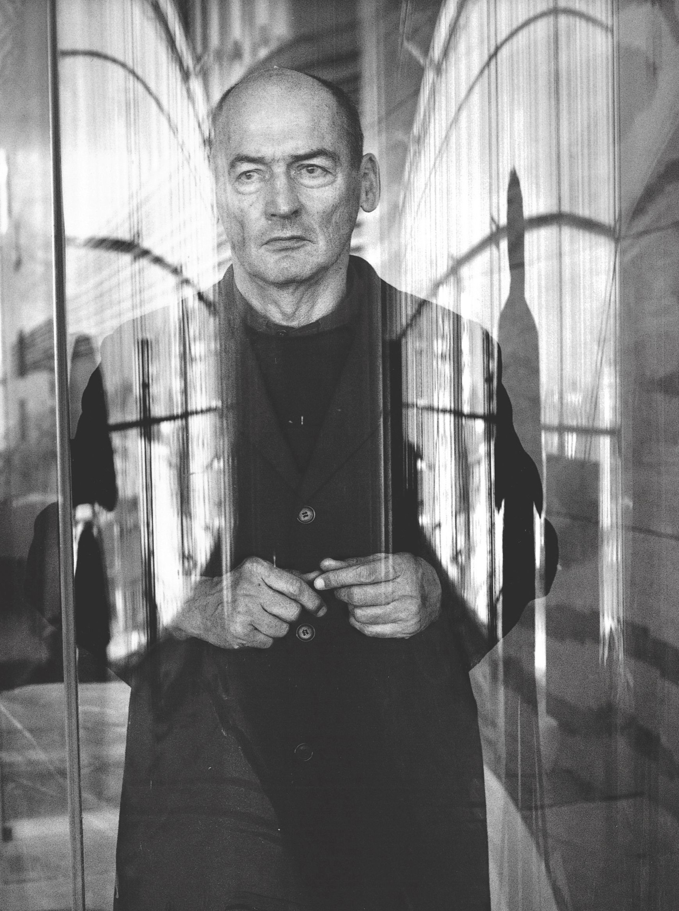

Born in Rotterdam, Rem Koolhaas spent four years of his youth in Indonesia, where his father served as director of a newly formed cultural institute. Following in the footsteps of his literary father, Koolhaas began his career as a writer. He was a journalist for the Haase Post in The Hague, and later tried his hand at writing movie scripts.
Koolhaas's writings won him fame in the field of architecture before he completed a single building. After graduating from the Architecture Association School in London in 1972, he received the Harkness Fellowship for travel and research in the United States. During this period, he wrote Delirious New York, which he described as a "retroactive manifesto for Manhattan" and which critics hailed as a classic text on modern architecture and society.
In 1975, Koolhaas founded the Office for Metropolitan Architecture (OMA) in London with Madelon Vriesendorm and Elia and Zoe Zenghelis. Focusing on contemporary design, the company won a competition for an addition to the Parliament in The Hague and a major commission to develop a master plan for a housing quarter in Amsterdam.
In 1987, Koolhaas was hired to design and build the Netherlands Dance Theater in The Hague. Composed of three areas, including a stage and auditorium, a rehearsal studio, and a complex of offices and dressing rooms, the theater garnered Koolhaas immediate acclaim.
Delirious New York was reprinted in 1994 under the title Rem Koolhaas and the Place of Modern Architecture. The same year, he published S,M,L,XL in collaboration with the Canadian graphic designer Bruce Mau. Described as a novel about architecture, the book combines works produced by Koolhaas's Office for Metropolitan Architecture with photos, plans, fiction, cartoons and random thoughts. The title refers to the way the architect decided to arrange the book: instead of a chronological timeline, it is organized by project size.